Problem statement
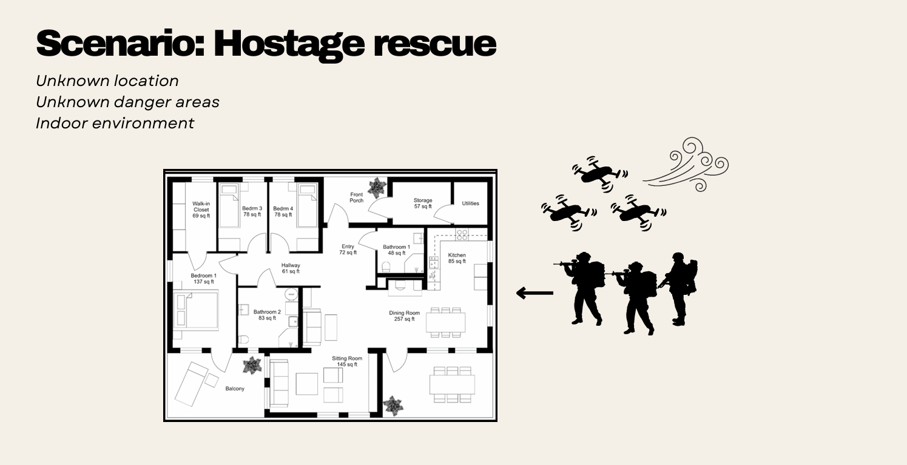
During military operations, soldiers often lack real-time spatial awareness of complex indoor environments. Current drone systems struggle in GPS-denied, cluttered spaces and rely on bulky hardware with high computational resources. The aim of this Capstone was to develop a swarm of nano-drones capable of mapping indoor environments using hardware with minimal computational resources, giving operators additional spatial awareness for rapid decision-making.
Objectives
- Create a cohesive swarm consisting of at least three drones
- Enable reliable local positioning and obstacle avoidance for each individual drone without GPS
- Achieve collaborative mapping of a 2D indoor environment within software simulation
A swarm approach was chosen over a single drone for its redundancy and resilience: the cognitive load is distributed across multiple units, allowing complex problems to be solved through simple individual behaviour (inspired by ant colonies, bee swarms and bird flocks).
System architecture
Physical design
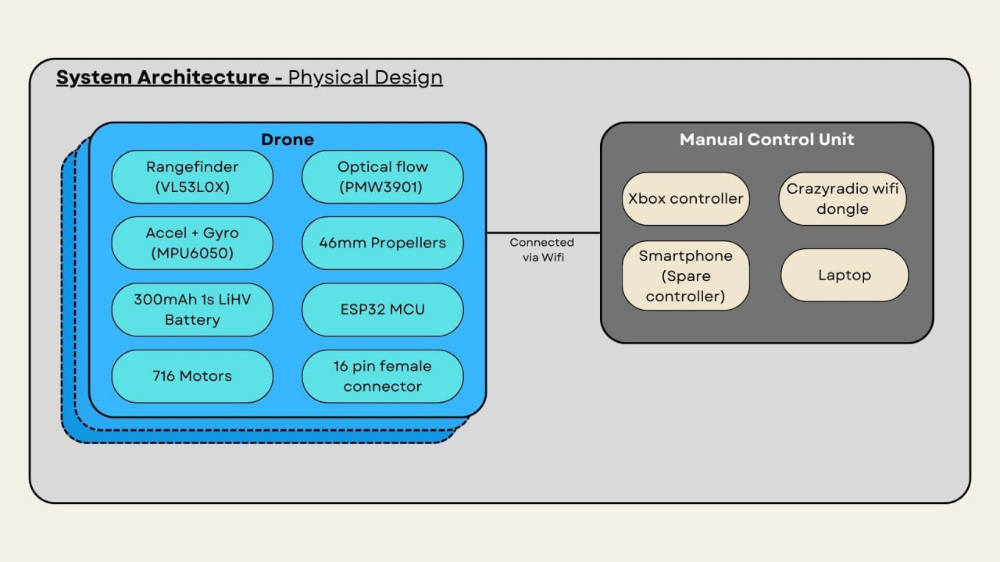
Each drone unit is a COTS ESP-drone running on the ESP-IDF framework, with a custom 3D-printed sensor mount. MCU: ESP32-S2 (WiFi connectivity) Sensors: VL53L0X rangefinder (altitude), PMW3901 optical flow (x/y position), MPU6050 accelerometer + gyroscope Propulsion: 4x 716 motors with 46mm propellers Power: 1S 300mAh LiHV battery Manual Control Unit: Smartphone app (basic), or laptop with cfclient, Crazyradio dongle and Xbox controller (advanced, up to <1km range)
Operational flow
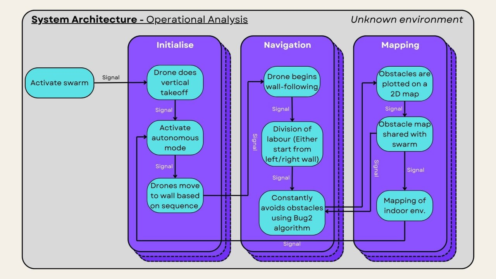
Initialise: Drones perform a vertical take-off, activate autonomous mode and move to their designated wall based on a predefined sequence. Navigation: Drones locate a left/right wall and execute wall-following behaviour with division of labour, constantly avoiding obstacles using the Bug2 algorithm. Mapping: Obstacles are plotted on a shared 2D obstacle map, while each drone simultaneously builds a 2D map of the indoor environment.
Hardware development
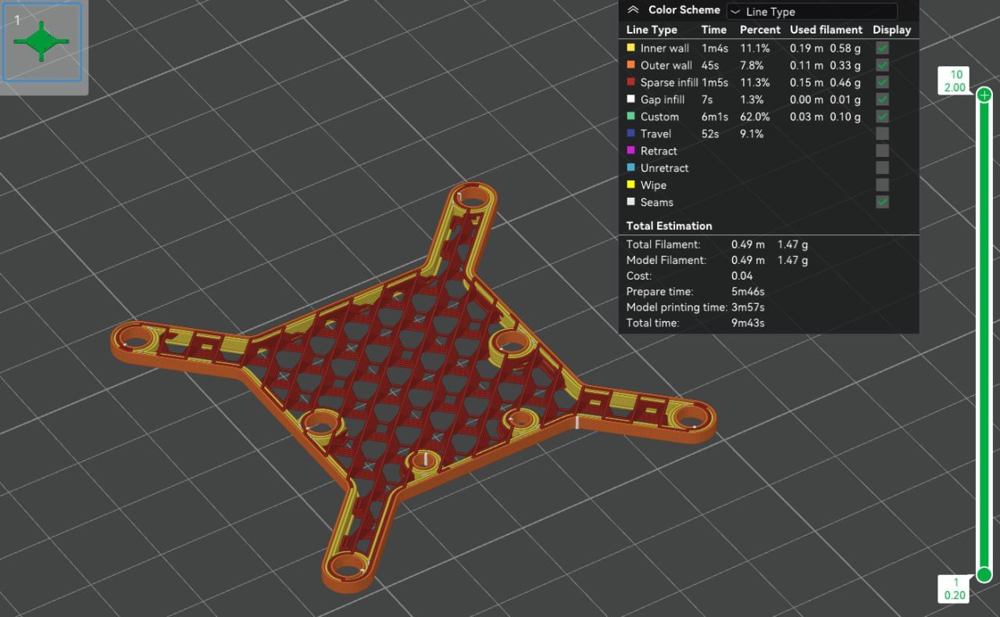
Sensor mounts were modelled in CAD and printed on a Bambu Lab 3D printer, going through three iterations to shave 2.5g of weight (final print: 1.47g). Sensor integration involved debugging SPI/I2C communication in the ESP-IDF environment, including a faulty optical flow sensor (misplaced resistor), an incorrect SPI mode in the upstream library, SPAD info timeouts and stop-variable failures on the rangefinder.
Flight tests revealed the drone's weight budget was the key constraint: 716 motor lift: 23g each, 92g total for four motors Optimal thrust-to-weight ratio of 2:1 gives a 46g maximum take-off weight, leaving only ~12g payload on a 34g frame With sensors, mount and metal screws the unit weighed ~56-60g and flight time dropped to ~3 minutes, which was barely sufficient for the 9.6m x 6.3m test room. Plastic fasteners were sourced to trim weight further.
Software swarm framework
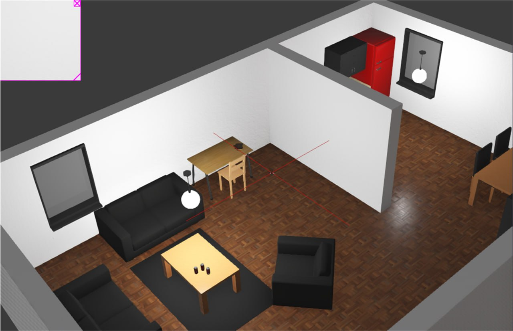
Due to the hardware integration challenges, the project scope was shifted to a Software-in-the-Loop (SiL) simulation in Webots. The framework was built in three layers:
- Base layer - Wall-following with PID control for navigation, and the Bug2 algorithm for obstacle avoidance
- Middle layer - Swarm communication, allowing drones to exchange position data and share obstacle information
- Top layer - Mapping, producing both a shared obstacle map and an environment (wall) map
Swarm algorithm
Particle Swarm Optimisation (PSO) using Clerc's constriction coefficients was tried first, but drones collided within seconds of initialisation even after tuning. Reinforcement learning (DQN and policy gradient) was evaluated on OpenAI Gym but dropped due to computational cost on an ESP32 and insufficient training interactions with only three drones. The final implementation used a minimal Bee Colony Optimisation (BCO), where each drone acts as a "bee" scouting paths toward the target while sharing location data, using a fitness function based on Euclidean distance to the target.
Obstacle avoidance and obstacle mapping
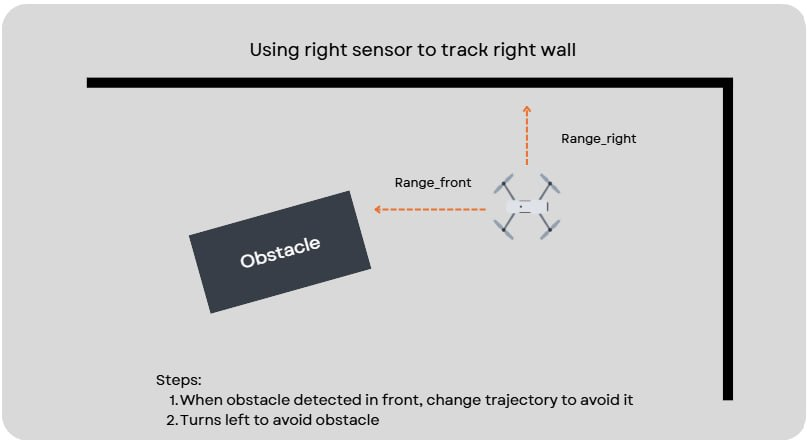
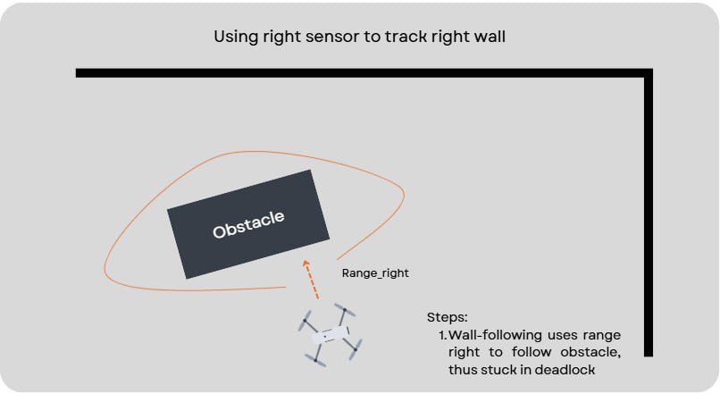
When the front rangefinder detects an obstacle at 0.5m, the drone rotates 45 degrees, aligns parallel to the surface and continues toward the goal. A known weakness of wall-following is the deadlock shown above: after avoiding an obstacle, the side rangefinder may lock onto the obstacle itself and circle it indefinitely. To handle trickier obstacles, a shared 2D obstacle map was devised without additional hardware: 1. Drones whose translation/rotation goes out of bounds are logged as failed 2. An obstacle ("X") with a buffer zone is marked on a 20m x 20m grid (1m cells) at the failure location 3. The map is broadcast to the whole swarm 4. Remaining drones adjust their velocity using a find-safe-path mechanism and a predictive velocity adjustment with three look-ahead danger levels (1.5s / 1s / 0.5s)
Environment mapping
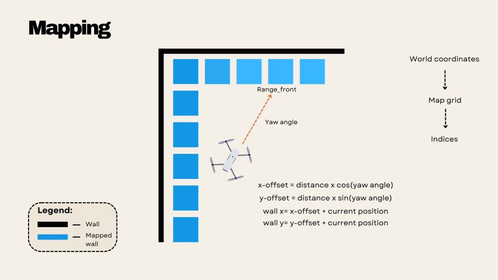
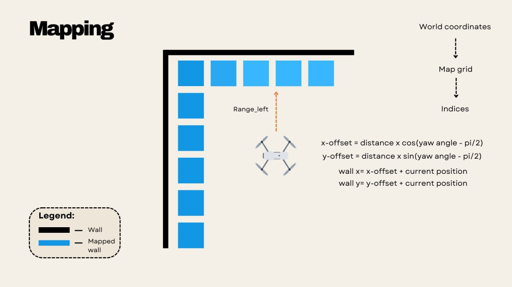
Each drone uses its front, left and right rangefinders together with its yaw angle to compute wall coordinates: x-offset = distance x cos(yaw), y-offset = distance x sin(yaw) (side sensors offset by +/-90 degrees) World coordinates are converted into grid indices and printed as a 2D ASCII map every 5 seconds. Maps from individual drones are then compared and averaged across the swarm for consensus-based accuracy and redundancy.
Results
Navigation
Four unknown indoor environments with increasing obstacle difficulty were tested in simulation: Env #1 (3 obstacles, overturned furniture): Entire swarm navigated through successfully Env #2 (3 obstacles, rotated furniture): Two drones passed, one entered a wall-following deadlock around a shelf Env #3 (8 potted plants): One drone passed; irregular plant surfaces confused the rangefinders and blocked the walls Env #4 (Living room, study area, dining area): One drone crashed at a shelf in the study area, but after sharing the obstacle position the remaining two drones adjusted their trajectory and completed the full course through a blocked fridge and chairs.
Environment mapping
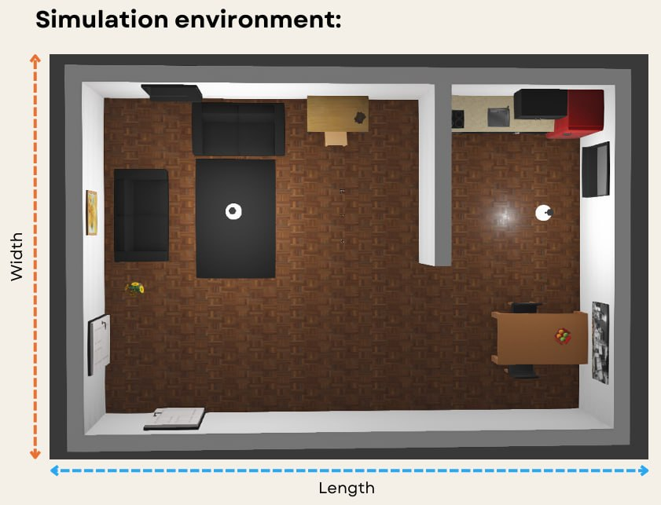
The swarm successfully mapped the 9.6m x 6.3m simulation floorplan above as a 2D ASCII map with correct proportions and dimensions.
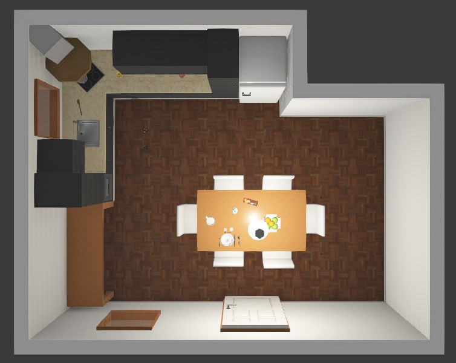
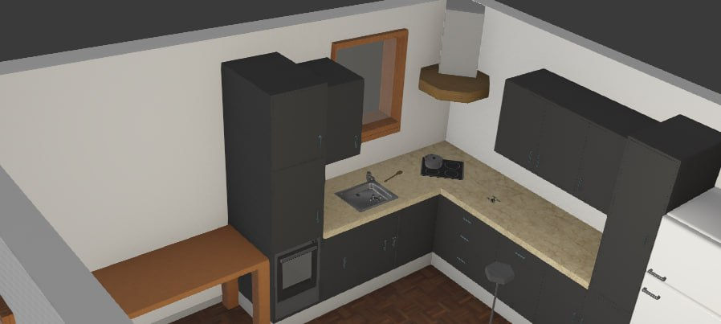
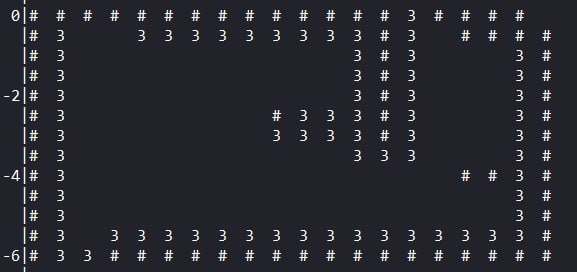
In a second, unseen kitchen environment, two drones produced the visually accurate ASCII map shown above ("#" marks walls, "3" marks the drone's trajectory), with the longest wall estimated at 6m versus the actual 5.47m, demonstrating the mapping algorithm's robustness regardless of wall placement and dimensions.
Conclusion and future work
The project established the foundations for a GPS-denied nano-drone swarm capable of navigating, avoiding obstacles and mapping unknown indoor environments with limited computational resources. Key lessons were the importance of weight budgeting on nano platforms and the value of simulating early to protect hardware. Future work includes real-world flight tests with lighter hardware, refined swarm coordination and failsafes, deadlock detection for wall-following, better division of labour ("divide and conquer" mapping) and camera integration for visual localisation.